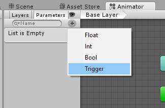
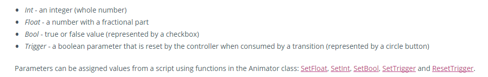
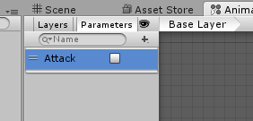
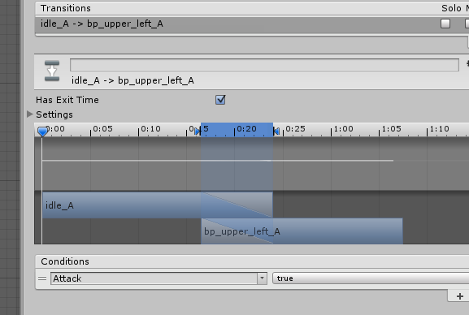
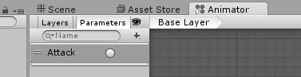
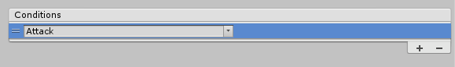
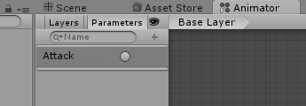

The Butcher will get exhausted if we continue to let him punch forever. Let's add a Parameter, so that we have more control over when he punches.
A Parameter is a setting that allows us to control and fire off conditions, either through the Unity screen, or through the code in the mecanim class. These are our hooks that connect the game's code to the Animator State machine, and allows our entities to be animated and active in-game.
If the Play button is pressed and the animation is running, please click it again to stop it.
In the Parameters tab, you'll see an entry that says "List is Empty". Click on the plus button.

We have four options: Float, Int (Integer), Bool, or Trigger.

Float and Int allows us to enter a numeric value. This type of parameter would be good for a speed, index, multiplier, or any other where a numeric value would make sense.
A Bool is either true or false, until something changes it, while a Trigger allows a named value to enable / disabled, in a single fire, and turns itself off
For starting off, select the Bool Parameter, and give it the name "Attack".

On the Transition line from Idle_A to bp_upper_left_A, click on it to bring up its Inspector window. Under Conditions, click on the Plus. A new Condition is added, and since we only have one Parameter, it sets it to that.

Press the Play button. You'll notice that the Butcher is idling in the Game window. In the Animator window, click on the Attack. Because the parameter is type "Bool", it stays either true or false until we change it.
Since our transition between Idle_A to bp_upper_left_A relied on the condition of Attack to be True, the Animator State finishes the Idle_A animation, then moves up the Transition line to bp_upper_left_A. We don't have a condition on the return Transition, so once the bp_upper_left_A animation finishes, it goes back to Idle_A.
The Bool Parameter Attack is either true or false, and won't change unless we make it change to false. Click on the Attack trigger again unchecks it, which changes the condition of the Transition. Once the animations are all complete, it will settle back to the idle_A animation and no longer transition to the bp_upper_left_A.
For an Attack animation, the bool doesn't make a lot of sense. If we were to use a bool, we'd be responsible for turning it on and off to stop the attack animation.
Rather than using a Bool, let's try a Trigger Parameter.
Stop the animation by click on the Play button again, and click on the Attack Parameter. Right click on it, and click on Delete.
Press the Plus button again, and set a Trigger type Parameter, naming it "Attack".

The Attack parameter now has a round circle, rather than a checkbox.
Click on the Transition line from Idle_A to bp_upper_left_A, and adjust the Condition. Since we named it the same as our our Condition, it automatically took effect.
If it did not, click on the two lines in front of the Parameter name to highlight the line, and press the Minus button.

Then re-add the Parameter using the Plus sign.
Press the play button again. The Butcher will start in his Idle animation and stay idling. Click on the circle by the Attack Parameter to fire off the event.

The Butcher finishes his Idle animation, then transitions to bp_upper_left_A, then back to Idle. However, since we using a Trigger, it's a one time cycle. The Attack trigger only fires off once, then turns itself off. This is unlike the bool, which stayed either True or False until we changed it.
This is a more natural flow for an attack animation. Fire off, and wait for the next trigger.
However, it's not ideal yet. The Idle_A animation wants to finish before firing off the transition to the next state. When we are calling a Trigger for Attack, we want the transition to begin immediately.
Click on the Transition line from Idle_A to bp_upper_left_A. Remember that Has Exit Time setting? That tells the State that in order for it to Transition, the Exit Time must pass. The Exit Time is the length of the animation itself. Uncheck the Has Exit Time, and re-play the Animation and fire off the Attack Trigger.
You'll notice that now when you click on the Attack trigger, the Transition happens immediately, firing off the bp_upper_left_A trigger, interrupting the Idle_A state.
Created with the Personal Edition of HelpNDoc: News and information about help authoring tools and software